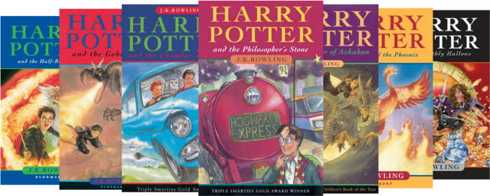
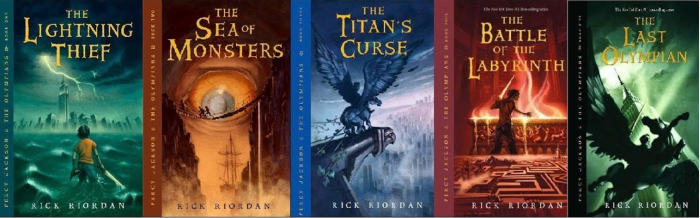
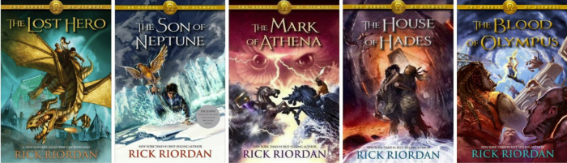
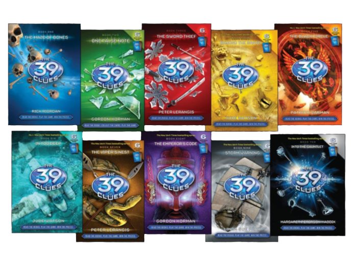
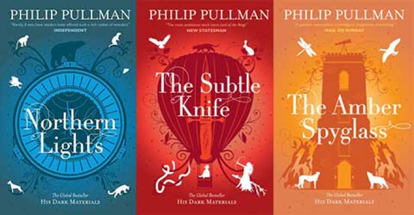

I love to read! Reading is one of my main hobbies and I have been doing it for most of my life. It's been a favourite passtime of mine growing up, and it's really shaped me into who I am today. I loved reading stories and novels, and they taught me a lot about people, life and different perspectives. I will be sharing some significant book series that I enjoy and I hope you can like them as well!
A very well-known book series that I like is the "Harry Potter" book series by author J.K Rowling. It has 7 books in total.
I read this book series in middle school and was fascinated by the rich world building in the series. I connected with the books and I learned a lot about friendships and acceptance from these books. I became attached to the Wizarding World as I was going through a difficult time when I was reading it, and I adored the idea that Hogwarts will always welcome me home. It comforted and spoke to me; a legendary book series.
Another popular book series I love is "Percy Jackson and the Olympians" by Rick Riordan. There are 5 books in total.
I also read this series in middle school and I fell in love with the characters. The author, Rick Riordan, writes incredible characters with rich and dynamic personalities. You will find representation of people of all kinds, and my entire knowledge of Greek mythology comes from this series. It's explained in a way that's easy to understand and digest yet takes you on a complex adventure and really opened my eyes to different perspectives I otherwise would've never considered. I wholeheartedly recommend this series.
To follow up the previous book series, we have "Heroes of Olympus" by Rick Riordan, There are 5 books in total.
This book series is beautiful, and while I personally connect to the previous one more, this adds another dimension to the complex, rich world of the books before. Many sequels are disappointing but this series has blown me away. It helped me realize how different perspectives make everything larger than it seems, and how crucial it is to understand them. It is a must-read!
The "39 Clues" book series is written by a collaboration of authors, including Rick Riordan, Gordon Korman, Peter Lerangis, Jude Watson, Patrick Carman, Linda Sue Park, Margaret Peterson Haddix, Roland Smith, David Baldacci, Jeff Hirsch, Natalie Standiford, C. Alexander London, Sarwat Chadda and Jenny Goebel. The first series has 10 books officially.
I read this book series when I was quite young. It was one of the first complex book series I read. It holds a special place in my heart, and the writing of so many different authors really shines through here. It was my introduction to concepts such as good vs evil and betrayal which I found very interesting. I do love this series a lot.
"His Dark Materials" is a charming trilogy by Philip Pullman, meaning it has 3 wonderfully written books in total.
This trilogy is very special to me. I read the first book ("The Golden Compass" although also known as "The Northern Lights")in middle school for an independant novel study. The world, characters and story pulled me into the book and I felt compelled to read more. I finished the trilogy and was baffled. It had many concepts I could not consider at the time I read it, due to circumstances out of my control. During a difficult time, this series inspired me. It got me into writing my own work, and it is definitely worth the read.
My love for reading inspired me to write my own work. I'm not very good at short stories, but my work mostly consists of novels and poems. I write everyday for at least 10 minutes. I originally started writing to let go of thoughts that were weighing me down, almost as a therapeutic practice. But I found I had a passion for storytelling and expressing emotions, and I've been writing since!
Here are some poems I wrote:
Whenever I'm writing, studying or working I like to listen to music to get me in the mood. I found video game music in general to be very helpful, and I enjoy it quite a bit. I listen to a lot, but some of my top tracks are: